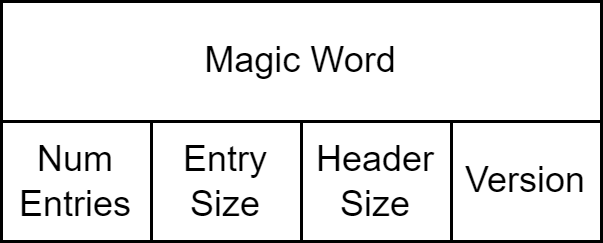
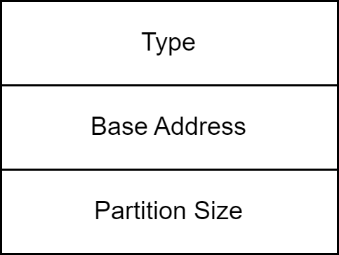

AMR - Device Programming¶
Overview¶
This page describes how AMR V80 boots from the AMD Alveo™ V80 card’s configuration storage devices and how the AMR Management Controller (AMC) and its companion AMR Management Interface (AMI) utility allow programming images to be transferred into the V80 card’s configuration storage device. Because AMR uses the regular AMD Vivado™ design flow and generates full programming PDIs, the amount of programming and management infrastructure is greatly simplified compared to a full DFx flow, but still allows selecting and reprogramming which image is used to boot the card.
Alveo V80 Configuration Storage¶
The primary configuration storage device of the Alveo V80 card is a 2Gb OSPI memory and the card’s boot mode selection pins are set to boot the card with programming images from this memory.
{kind=link}
Using Vivado hardware manager during application development allows JTAG download of programming images to the FPGA or the OSPI configuration storage.
In deployment, the AMC allows new programming images to be written into the configuration storage device.
Configuration Storage Programming¶
The AMC firmware component of AMR V80 is expected to be the standard way to load new programming images onto the Alveo V80 card. The firmware running on the R5 processors of the V80’s processing subsystem receives copies of new programming information for the V80’s configuration storage device. A data transfer from the PCIe® host to a DDR buffer subsequently writes the programming image into the non-volatile configuration storage device.
As noted in the section above, it is also possible to download new images to the card via JTAG, but this approach requires physical access to the card and a suitable JTAG programming cable connected to the card. These may be reasonable assumptions in the early stages of a new application design based on AMR but it is likely that the PCIe based device programming feature will be the more common and readily available programming path for AMR designs targeting the V80 card.
Application developers familiar with other Alveo cards may be familiar with the ‘A-B update’ scheme that allowed storage of an active and a backup programming image in the configuration storage memory. AMR supports a similar partitioning scheme for the configuration storage memory so that multiple programming images can be stored in the memory. The AMC firmware and its companion AMI utility program allow the new programming images to be written into specific partitions of the configuration storage memory. To keep track of how many partitions are available within the configuration storage memory, AMC firmware uses a flash partition table. This is a small data structure written into the first page of the OSPI configuration storage device.
An explanation of the flash partition table data structure and an outline of the AMC process for updating the configuration storage are provided in the subsections below.
Flash Partition Tables¶
The first page of memory on the AMR OSPI is expected to contain the AMR Flash Partition Table (FPT). The purpose of the AMR FPT is to specify how the OSPIs raw memory is to be divided up into distinct partitions, with each partition intended to contain a different AMR-based application PDI. There are two types of content within the AMR FPT. The first is a fpt_header, which exists at the start of every FPT and specifies some basic characteristics of the FPT. This second is one or more fpt_entry declarations that gives the specification of a partition within the remaining pages of the OSPI memory.
AMR FPT Header¶
The diagram below shows the memory layout of an AMR fpt_header:

The first word of the AMR FPT header is a magic word used by the AMC firmware to confirm that the data that follows is indeed an AMR FPT header.
The magic word used by AMR FPT headers is 0x92F7A516.
This value is intentionally different from the FPT magic word used in earlier Alveo products to distinguish AMR FPTs from non-AMR Alveo designs and software stacks.
The next word in the AMR FPT header contains four single-byte fields:
The version field allows future versions of the AMR FPT header to be identified in the event that an end user wishes to extend or update the AMR FPT.
The header size field indicates the number of bytes reserved for AMR FPT header content.
The entry size field indicates the byte size of each subsequent AMR fpt_entry.
The num entries field indicates how many AMR fpt_entry instances follow the fpt_header.
AMR FPT Entry¶
The diagram below shows the content of an AMR fpt_entry:

Type indicates the type of content in the partition of the configuration storage device memory declared by this entry.
In the AMR baseline implementation of FPT, only a single type (PDI) is supported for PDI content within each partition.
Base address indicates the address offset of the beginning of the partition in the configuration storage device memory.
Note: The AMD Versal™ PLM requires each PDI to be aligned to 32KB boundaries within the OSPI address space.
Partition size indicates the size (in bytes) of the OSPI memory reserved for the given partition.
The partition should be sized large enough for the PDI content to be placed within it.
Multiple instances of the AMR fpt_entry can be declared following the fpt_header declaration. In the baseline AMR implementation, two partitions are declared so that the partition with the higher base address offset can serve as a backup PDI boot image in case the PDI content of the first partition fails to load correctly during development. This resilient boot behavior is provided by default thanks to Versal’s standard fallback boot capability.
Initializing the V80 OSPI with FPT content¶
During the AMR build process, the fpt step processes a json file containing a textual representation of the intended amr fpt content and outputs a binary image of the amr fpt. the textbox below shows an example of the json file used in the reference design to declare the fpt_header instance and two fpt_entry instances..md
{
"fpt_header(0)": {
"magic_word" : "0x92F7A516",
"fpt_version" : 1,
"fpt_header_size" : 128,
"fpt_entry_size" : 128,
"num_entries" : 2
},
"fpt_entry(0, 0)": {
"type" : "PDI",
"base_addr" : "0x00008000",
"partition_size" : "0x07E00000"
},
"fpt_entry(0, 1)": {
"type" : "PDI",
"base_addr" : "0x07E08000",
"partition_size" : "0x07E00000"
}
}
The AMR build flow prepends the AMR FPT binary image to the OSPI binary programming image so that it can be flashed onto the Alveo V80 card using Vivado hardware manager. This initialization step only needs to happen once, provided the FPT partitions do not change. If changes are required for a given application, the FPT JSON file can be edited and new FPT binary content will be generated by the AMR build flow. This results in a new FPT Setup PDI that can be programmed onto the card OSPI via Vivado hardware manager ](see AMR Updating FPT Image in Flash); note that in this circumstance, the v80_initialization.pdi provided with the pre-built deployment package can be used with the new FPT Setup PDI to program the card OSPI. The initialization PDI does not need to be regenerated.
AMC Management of FPT partitions¶
Once the Alveo V80’s OSPI memory is initialized with AMR FPT content, the AMR AMC firmware will allow the content of each declared FPT partition to be loaded with images. The AMC firmware implements a message passing interface with the PCIe host. PDI data from the PCIe host is transferred into a region of DDR memory mapped into the PCIe BAR space accessible to PCIe PF0 (‘management’). When the AMC host driver completes the transfer of this information into the shared DDR memory buffer, it sends a message (APC_MSG_TYPE_DOWNLOAD_PDI) via the mailbox IP in the AMR base design reserved for communication between the PCIe host and the AMC firmware operating on the RPU. On receipt of this message, the AMC firmware writes the PDI content from the DDR shared memory buffer into the OSPI configuration memory partition. The exact partition updated will be part of the message passed to the AMC firmware and typically originates from the commandline arguments to the AMI utility used to initiate the process on the host operating system. Specifying different partition numbers (each partition number corresponding to the index order of the fpt_entry declarations earlier) allows the AMI utility to target different partitions within the OSPI for writing with new content.
Selection of Programming Images at Runtime¶
Cold Boot / Power-on-Reset¶
AMR’s FPT based partitioning of the OSPI leverages the standard Versal boot process. This means that when the Alveo V80 card starts from a cold-boot or POR, Versal’s PMC searches the default boot device for a programming image and begins to load. The AMR FPT content present at the start of the OSPI memory does not have the signature of a valid PDI file so it is ignored and rapidly skipped by the default boot process. The PMC boot process will find PDI content in the first OSPI partition (typically at first 32KB offset in OSPI memory) and load the AMR based design from that partition first.
Runtime and Multiboot¶
Once the initial AMR based design is loaded and operational, it is possible to again use the standard Versal PMC boot process to reload the FPGA configuration from the PDI content in a different OSPI partition. This mechanism is built on Versal’s standard multiboot procedure, which sets the next boot offset in OSPI memory in the PMC_MULTIBOOT register and then triggers a system reset in the PLM to reload the FPGA configuration from the OSPI new boot offset. This mechanism is encapsulated in the AMC’s utility interface commands, which allows the selection of the next boot partition as one of the arguments to the device_boot subcommand.